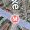
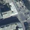

Application Control Panel
Table of Contents
The publication of a map application is done using 4 different settings tabs, each corresponding parts must be properly informed.
Note
You can switch from one tab to another and make changes at any time. Your settings are saved only when you click on the button “Publish”
Warning
Any change in one of the tabs requires the publication of the project (“Publish” button) to be taken into account by the published map
Icon |
tab |
Action |
 |
General |
General Application Configuration |
|layers | |
Layers |
Configuring application layers |
Map |
Setup Map application |
|
 |
Service | Configuring application features |
{kind=link}
General Application Configuration
The first setting tab is open by default to load the module. The parameters to enter are listed in the table below.
Parameter |
Definition |
Name of the project |
Name of the registered project in the: doc: ../ maps / index. (Name of the map file) |
Title |
Sets the title used in the published application |
Access rights |
Defined groups of users with access to published applications |
Theme |
Defines the theme of the published application |
project URL |
Show the relative URL of the published application |
active card |
Displays the name of the card used by the published application |
| Date | Displays the date and time of publication of the application |
Language |
Sets the language used by the published application |
Keywords |
Sets keywords application with a list of words separated by commas |
Author |
Sets the name of the author of the published application |
| Copyright | Sets the value of the copyright of the published application |
| Description | Sets the description of the published application |
Note
Access rights can be assigned to multiple groups by clicking the “Add” button.
Warning
The use of the “public” group allows access to the application by any Internet user.
Note
Access rights can be assigned to multiple groups by clicking the “Add” button.
Note
Language settings, keywords, author, copyright and description metatags correspond to HTML tags the published application.
Note
The description of the application is used in the public interface. You can edit it with rich-text editor. For more information about the features of the editor, please refer to the CKEditor documentation <http://docs.cksource.com/Main_Page> __.
Warning
Be sure to fill in all the editable fields.
A preview of the first setting tab is presented below.

Configuring application layers
The third step of the configuration of an application is to set the different layers used in the published map. The primers (or background) and the layers of the project are configurable as described in this section.
Data Sources
The primers used to display tiles from third servers, but also to use a project created in the: doc: ../ maps / index. The various parameters available are listed below.
Parameter |
Definition |
| Default | Means the primer shown by default to load the published application |
| OpenStreetMap | Adds OpenStreetMap tiles as background layers available |
| MapQuest | Adds MapQuest Open tiles as background layers available |
Adds the Google Maps tiles as background layers available |
|
| Bing | Adds Microsoft Bing tile as background layers available |
| IGN | Adds the IGN Geoportal tiles as background layers available |
| Created layers | Add MapMint project as a primer available (WMS) |
{kind=link}
Note
Click holding the Shift key on your keyboard to select multiple primers.
free primer
The bottom layer uses the OpenStreetMap project OpenStreetMap tiles <http://www.openstreetmap.org> __ with the default style. their use is subject to the terms and conditions <http://www.openstreetmap.org/copyright> __ OpenStreetMap.
Basecoats MapQuest MapQuest Map and Aerial use the Open JavaScript Maps API <https://developer.mapquest.com/web/products/open/map> __. Their use is subject to the terms and conditions <https://developer.mapquest.com/web/products/open/map#terms> __ MapQuest.
{kind=link}
{kind=link}
basecoats owners
The Google Maps basemap layers use the Google Maps API v3 <https://developers.google.com/maps/documentation/javascript/> __. Their use is subject to the terms and conditions <https://developers.google.com/maps/terms/> __ Google Maps.
{kind=link}
{kind=link}
The Bing Maps basemap layers use the Bing Maps API <http://www.microsoft.com/maps/> __. Their uses are subject to the terms and conditions <http://www.microsoft.com/maps/product/terms.html/> __ Microsoft Bing.
Icon |
Parameter |
Definition |
| Bing Maps | Adds Bing Maps tiles as background layers available |
|
| Bing Satelite | Bing Adds Satellite tiles as background layers available |
|
|  | Bing Hybrid | Bing Adds Hybrid tiles as background layers available |
{kind=link}
Basecoats IGN uses IGN Geoportal API <http://api.ign.fr/services#web> __. Their uses are subject to the terms and conditions <http://api.ign.fr/licences> __ of the National Geographic Institute.
Icon |
Parameter |
Definition |
Maps |
Adds IGN Maps tiles as background layers available |
|
|  | Aerial photos |
Put the tiles IGN aerial photos as background layers available |
{kind=link}
Basecoats MapMint
Maps created in the: doc: ../ maps / index are listed in the last drop of form funds layers.
Choosing a card created as a primer entails the creation of a pyramid tile map (WMTS). The bottom layer will be added to the legend with an icon automatically generated.
Project layers
Layers used in the active map are listed in a table in the lower part of the window. Use the check boxes, radio buttons and drop-down lists to set them. The various parameters are listed in the table below.
Parameter |
Definition |
| Vector | Set the layer Vector Mode (WMS) |
| Raster | Set the layer Raster Mode (WMS) |
| Activated | Sets whether the layer is enabled by default to load the published application |
Access |
Defined groups of users authorized to view the layer |
| MinZoom | Sets the minimum display scale of the layer |
| MaxZoom | Sets the maximum display scale of the layer |
| Popup | Set opening a popup overview of the features in the layer |
| Window | Set opening a window to click on the features in the layer |

Warning
Every layer must be set in Vector or Raster mode.
Warning
The vector mode is to be used only for little bulky layers (max 2MB).
Warning
Enabling Popups or Fenetres assumes that the layer has been set as queryable in the: doc: ../ maps / index.
A preview of the second Settings tab is shown below.
{kind=link}
Setting the map
The third publication settings tab allows an application to set the map display properties to be published and the application of presentation options.
Parameters of the map display
This specific part to define the map of properties to publish and display type of application. The different parameters to enter are listed in the table below.
Parameter |
Definition |
projection system |
Sets the projection system displayed by the cursor coordinates tool |
Rendering Method |
Sets the given method used by the map (SVG or Canvas) |
Unit of measure |
Defines the unit of measurement displayed by the measurement tools (meter | foot | degree) |
Scope default |
Define the geographic extent of the map by default to load the published application |
Minimum span |
Set the minimum geographic extent of the map of the published application |
Maximum Extent |
Set the maximum geographic extent of the map of the published application |
limited Scope |
Set the maximum geographic extent as card limit of the published application |
Note
The right combo to automatically fill in the boxes of the coordinates from the range of a layer of the project.
Parameters of presentation of the application
This specific part is used to enter the fields that are listed in the table below.
Parameter |
Definition |
character family |
Defines the character of family used in the published application |
Size |
Sets the font size used in the published application |
Font color |
Sets the character color used in the published application |
GC position |
Set the Layer Manager position |
| GC | Sets whether the Layer Manager must be open or not |
The three drop-down lists allow you to edit CSS properties based characters used by the application, such as the nature of family (font-family), the overall size of character (font-size) and the character color (color) .
It is not necessary to change the default, and their use is intended for specific cases.
Warning
Keep in mind the final appearance of the application before using the dropdown lists and modify the properties of characters. It is recommended nes not change the appearance of characters by default.
Configuring application features
The fifth and final step of the configuration of an application is to set the features of the card to publish. The different functionalities available are listed in the sections below.

Note
Click holding the Shift key on your keyboard to select multiple features.
Basic tools
Parameter |
Definition |
| Authentification | Displays the login form |
Share a link |
Permalink View and license card code |
Share on Twitter |
Permalink opens in a popup Twitter |
Share on Facebook |
Permalink opens in a popup Facebook |
| Scroll | Zoom in / Zoom out the map with the mouse wheel |
Move the map |
Move the center of the map by drag deposited |
My position |
Center the map on the browser location |
Track My position |
Follows the browser location |
Zoom by rectangle selection |
Zoom map as a rectangle defined by the user |
Zoom the maximum extent |
Zooms to the maximum geographic extent |
View an altitude profile |
Shows the elevation profile of a raster layer in a window |
Query one or more layers by rectangle |
Displays the attributes of one or more layers in a window |
Query one or more layers by circle |
Displays the attributes of one or more layers in a window |
Measure distance |
Displays the result of a distance measurement in a window |
area measurement |
Displays the result of a measurement area in a window |
Print the map |
Print current map view in a PDF document |
Warning
The integration features by rectangle and circle by questioning imply that / the targeted vector layer have been declared as queryable in the: doc: ../ maps / index.
Warning
Using the elevation profile feature requires that the target raster layer have been declared as queryable in the: doc: ../ maps / index.
other tools
** Functionality ** |
Definition |
Overview map |
Show overview map |
Move and zoom |
View a zoom slider with a joystick |
Ladder |
View the map scale |
Search engine |
Displays the entities search engine |
cursor position |
Displays the coordinates of the cursor when hovering over the map |
Add a layer |
Displays a list of additional layers available |
Add WMS layer |
Displays a list of additional WMS layers available |
Warning
The search engine functionality implies that / the targeted vector layer have been declared as queryable in the: doc: ../ maps / index.
spatial analysis tools
** Functionality ** |
Definition |
Boundary |
Shows the limits of the selected entity |
Buffer |
Displays the buffer zone of the selected entity |
buffer zone with mask |
Displays the mask in the buffer zone of the selected entity |
centroid |
Displays the centroid of the selected entity |
convex hull |
Show the convex envelope of the selected entity |
spatial query |
Displays entities resulting from the parameterized query |
| Simplification | Simplify by removing nodes from the selected entity |
Warning
The features of spatial analysis imply that / the targeted vector layer have been declared queryable and the corresponding properties were indicated in the: doc: ../ maps / index.
Publication of the application
Once all the settings made, click the “Publish” button in the toolbar of the application control panel.
If a green bar appears at the top of the screen, it means that the publication was successful. You can check your application in a new tab in your browser with the address http://votre-instance.com/public/votreapplication.
If a red banner appears, check all parameters of the card and the application and repeat.
Publication of the thumbnail
Click on the “Publish thumbnail” button causes the creation of a preview image of the card used in the public interface of the instance MapMint to present the project.
Note
Overview If the card is not issued, the public interface uses a single GetMap request, implying a longer charging time.
Preview application
You have the ability to preview the application to publish by clicking the “Preview” button. This causes the application opens in a new tab in your browser.
Remove Application
You can delete the published application by clicking the “Preview” button.